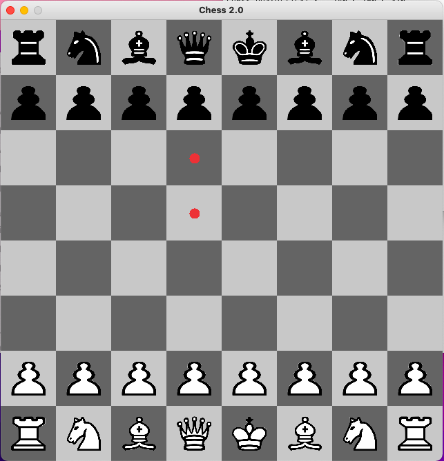

PROJECTS


Chess Game
Future Projects Plans
One plan for the future that I have is to extend the chess game that I made and add an AI to it. This way the user can simple play against the computer and do not need another person to play with. I would also like to add castling in the chess game. Another idea that I have is to build a website to keep track of exactly what I eat throughout the day, and also keep track of what I should be eating throughout the day. I think this site would be mostly beneficial for myself and it could also come in handy for other people.